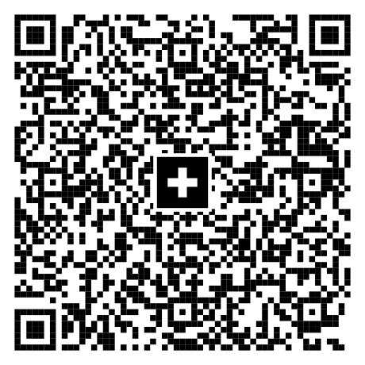

التبرعات
Café International مكان لقاء مفتوح للجميع ومجاني. يجعل ذلك ممكنًا فريقٌ من المتطوعين، وتضع دار الرعية الإصلاحية القاعات تحت تصرفنا.
ومع ذلك هناك مصاريف: للقهوة والكعك، ولزينة بسيطة، ولهدايا للمتحدثين الضيوف، ولتدريب متطوعينا. ويتحمّل الجزء الأكبر منها كلٌّ من مدينة أدليسفيل والكنيسة الكاثوليكية في أدليسفيل والكنيسة الإصلاحية في منطقة زيلتال.
بتبرعكم تساعدون على أن يبقى Café International مكانًا للقاء في أدليسفيل، وعلى أن نوسّع ما نقدّمه. كل مبلغ يساعد: عبر تطبيق البنك، أو في صندوق التبرعات في المكان، أو من خلال جمع التبرعات في رعيتكم.
شكرًا جزيلًا!
تحويل مصرفي

امسحوا الرمز بتطبيق البنك: المستفيد ورقم IBAN وعبارة «Spende Café International Adliswil» معبّأة مسبقًا. وأنتم تختارون المبلغ.
- الحساب
- Pfarreiliche Soziale Arbeit, Katholische Kirche Adliswil, Pfarrei Dreifaltigkeit
- Bank
- PostFinance
- IBAN
- CH70 0900 0000 6125 3662 0
- صاحب الحساب
- Jaworski Radoslaw (Pfarrer), Kath. Pfarramt Adliswil